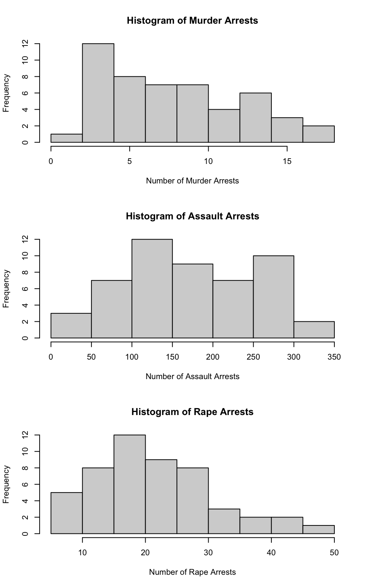
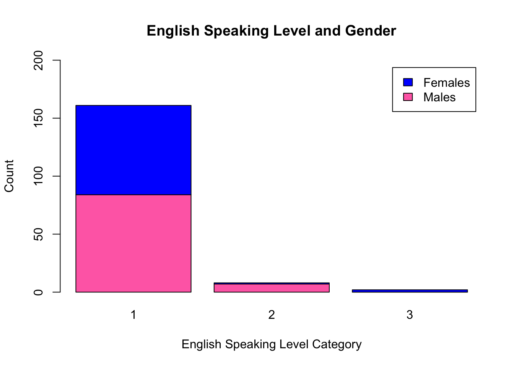

Assignments
Assignment 1
Problem 1
Install the datasets package on the console below using install.packages("datasets"). Now load the library.
#Install the dataset package
#install.packages("datasets")
#load in the library
library(datasets)Load the USArrests dataset and rename it dat. Note that this dataset comes with R, in the package datasets, so there’s no need to load data from your computer. Why is it useful to rename the dataset?
#Load in the dataset
USArrests## Murder Assault UrbanPop Rape
## Alabama 13.2 236 58 21.2
## Alaska 10.0 263 48 44.5
## Arizona 8.1 294 80 31.0
## Arkansas 8.8 190 50 19.5
## California 9.0 276 91 40.6
## Colorado 7.9 204 78 38.7
## Connecticut 3.3 110 77 11.1
## Delaware 5.9 238 72 15.8
## Florida 15.4 335 80 31.9
## Georgia 17.4 211 60 25.8
## Hawaii 5.3 46 83 20.2
## Idaho 2.6 120 54 14.2
## Illinois 10.4 249 83 24.0
## Indiana 7.2 113 65 21.0
## Iowa 2.2 56 57 11.3
## Kansas 6.0 115 66 18.0
## Kentucky 9.7 109 52 16.3
## Louisiana 15.4 249 66 22.2
## Maine 2.1 83 51 7.8
## Maryland 11.3 300 67 27.8
## Massachusetts 4.4 149 85 16.3
## Michigan 12.1 255 74 35.1
## Minnesota 2.7 72 66 14.9
## Mississippi 16.1 259 44 17.1
## Missouri 9.0 178 70 28.2
## Montana 6.0 109 53 16.4
## Nebraska 4.3 102 62 16.5
## Nevada 12.2 252 81 46.0
## New Hampshire 2.1 57 56 9.5
## New Jersey 7.4 159 89 18.8
## New Mexico 11.4 285 70 32.1
## New York 11.1 254 86 26.1
## North Carolina 13.0 337 45 16.1
## North Dakota 0.8 45 44 7.3
## Ohio 7.3 120 75 21.4
## Oklahoma 6.6 151 68 20.0
## Oregon 4.9 159 67 29.3
## Pennsylvania 6.3 106 72 14.9
## Rhode Island 3.4 174 87 8.3
## South Carolina 14.4 279 48 22.5
## South Dakota 3.8 86 45 12.8
## Tennessee 13.2 188 59 26.9
## Texas 12.7 201 80 25.5
## Utah 3.2 120 80 22.9
## Vermont 2.2 48 32 11.2
## Virginia 8.5 156 63 20.7
## Washington 4.0 145 73 26.2
## West Virginia 5.7 81 39 9.3
## Wisconsin 2.6 53 66 10.8
## Wyoming 6.8 161 60 15.6#rename the USArrests dataset
dat <- USArrestsIt is useful to rename the dataset because it is easier to work with. If the data set had a longer or more complicated name, it would be difficult and time consuming to type out the dataset name every time when you want to perform a function on the data. It also lets you keep track of your work if you make different versions of it so that it is not contaminated by changes that were meant to be on one version and not the other. This will let you replicate the work if changes were made to different versions.
Problem 2
Use this command to make the state names into a new variable called State.
dat$state <- tolower(rownames(USArrests))This dataset has the state names as row names, so we just want to make them into a new variable. We also make them all lower case, because that will help us draw a map later - the map function requires the states to be lower case.
List the variables contained in the dataset USArrests.
#find the variables in the dataset
names(dat)## [1] "Murder" "Assault" "UrbanPop" "Rape" "state"The variables in the USArrests dataset are Murder, Assault, UrbanPop, Rape, and State.
Problem 3
What type of variable (from the DVB chapter) is Murder?
Murder is a quantitative variable from the DVB chapter since it is a count of numbers.
What R Type of variable is it?
Murder is a numeric variable from the R type since it is also a count of numbers and functions such as mean or median can be applied.
Problem 4
What information is contained in this dataset, in general? What do the numbers mean?
The dataset contains arrest numbers for 4 types of crimes within all 50 states. Each state has a corresponding arrest rate for murder, assault, and rape, as well as the percent of urban population within the state. The numbers mean the number of arrests per 100,000 people in that state.
Problem 5
Draw a histogram of Murder with proper labels and title.
hist(dat$Murder, main = "Histogram of Murder Arrests", xlab = "Number of Murder Arrests", ylab = "Frequency")
Problem 6
Please summarize Murder quantitatively. What are its mean and median? What is the difference between mean and median? What is a quartile, and why do you think R gives you the 1st Qu. and 3rd Qu.?
#finding the summary statistics of the murder variable
summary(dat$Murder)## Min. 1st Qu. Median Mean 3rd Qu. Max.
## 0.800 4.075 7.250 7.788 11.250 17.400The mean of the murder variable is 7.788 murders, while the median is 7.250 murders. The mean is the sum of all data values divided by the number of values, or the average of the values within the dataset. The median, however, is the middle value after all of the values are put in numerical order. When distributions are skewed or there are outliers in the data, the median is better to use than the mean because the mean changes with skew or outliers and the median is more robust. A quartile is each of three values in which the data can be distributed into even fourths. I think that R gives us the 1st quartile and 3rd quartile because they can be used to calculate the interquartile range, which tells us the interval where half of the values within the data set lie. The median is also the 2nd quartile, so the three groups are given that split the data in even fourths.
Problem 7
Repeat the same steps you followed for Murder, for the variables Assault and Rape. Now plot all three histograms together. You can do this by using the command par(mfrow=c(3,1)) and then plotting each of the three.
#make a histogram of assault
hist(dat$Assault, main = "Histogram of Assault Arrests", xlab = "Number of Assault Arrests", ylab = "Frequency")
#make a histogram of rape
hist(dat$Rape, main = "Histogram of Rape Arrests", xlab = "Number of Rape Arrests", ylab = "Frequency")
#plot all three histograms together
par(mfrow=c(3,1))
hist(dat$Murder, main = "Histogram of Murder Arrests", xlab = "Number of Murder Arrests", ylab = "Frequency")
hist(dat$Assault, main = "Histogram of Assault Arrests", xlab = "Number of Assault Arrests", ylab = "Frequency")
hist(dat$Rape, main = "Histogram of Rape Arrests", xlab = "Number of Rape Arrests", ylab = "Frequency")
What does the command par do, in your own words (you can look this up by asking R ?par)?
Par can be used to set the parameters on a graph, making it easier to combine multiple graphs into one.
What can you learn from plotting the histograms together?
By plotting these histograms together, you can compare the arrest rates for each crime. Murders happen the least frequently and assaults happen the most frequently. You can also see that the histogram for murder is unimodal and skewed, the histogram for assaults is bimodal, and the histogram for rapes is also unimodal and skewed.
Problem 8
In the console below (not in text), type install.packages("maps") and press Enter, and then type install.packages("ggplot2") and press Enter. This will install the packages so you can load the libraries.
#install and load in the maps and ggplot2 packages
library('maps')
library('ggplot2') Run this code:
ggplot(dat, aes(map_id=state, fill=Murder)) +
geom_map(map=map_data("state")) +
expand_limits(x=map_data("state")$long, y=map_data("state")$lat) What does this code do? Explain what each line is doing.
What does this code do? Explain what each line is doing.
The first line above the map code loads the library for both packages. The first line of the map code is creating a plot of murder. The ggplot function is telling R to create a plot, the “dat” is telling R which dataset to use in the plot, and the “aes(map_id=state, fill=Murder))” is telling R to plot each state and fill it with the corresponding murder arrest rate. The geom_map function creates shapes for a reference map, and the map=map_data(“state”) function is telling R to map the data that corresponds with the state variable that we created earlier. The expand_limits function makes sure that the entire map fits within the plot of the graph and the (x=map_data(“state”)\(long, y=map_data("state")\)lat) tells R which data to base the plot limits off of, which in this case is the state data.
Assignment 2
Problem 1
Load in the data.
dat <- read.csv(file = "Assignment2data copy.csv")What are the dimensions of the dataset?
dim(dat)## [1] 171 7There are 171 columns and 7 rows (or 171 respondents and 7 questions)
Problem 2
Describe the variables in the dataset.
names(dat)## [1] "mjage" "cigage" "iralcage" "age2" "sexatract" "speakengl"
## [7] "irsex"There are 7 variables in the dataset: 1. “mjage” (How old were you the first time you used marijuana or hashish?) 2. “cigage” (How old were you when you first started smoking cigarettes everyday?) 3. “iralcage” (How old were you when you first tried alcohol?) 4. “age2” (Recoded final edited age (since respondents had multiple chances to change their age throughout the survey)) 5. “sexatract” (Sexual attraction) 6. “speakengl” (How well do you speak English) 7. “irsex” (Imputation revised gender)
Mjage, cigage, and iralcage are numeric variables (or quantitative) because the respondent gave an exact number for their answers for each variable and functions like mean can be applied to find the average age the respondents tried marijuana, cigarettes, and alcohol. Age2, sexatract, speakengl, and irsex are categorical variables because the respondents’ answers were split into categories when coded. Because respondents had the opportunity to change their age throughout the interview, the age variable was calculated from the raw birth date and the final edited interview date, the age entered in the questionnaire roster (if it exists), and the pre-interview screener age because interviewees had the opportunity to change their age throughout the interview.
What is this dataset about? Who collected the data, what kind of sample is it, and what was the purpose of generating the data? The dataset is a small sample from the National Survey of Drug Use and Health, which was conducted by the Center for Behavioral Health Statistics and Quality (CBHSQ, formerly the Office of Applied Studies) within the Substance Abuse and Mental Health Services Administration (SAMHSA) and is conducted by RTI International, Research Triangle Park, North Carolina. The survey was conducted through a computer assisted administration, and was changed from a strictly national design to a state-based sampling plan in 1999. The primary purpose of generating the data was to measure the prevalence and correlation of substance use and mental health issues in the United States, according to the NSDUH 2019 Codebook.
Problem 3: Age and gender
What is the age distribution of the sample like? Make sure you read the codebook to know what the variable values mean.
hist(dat$age2, main = "Histogram of Recoded Final Edited Age Categories", xlab = "Recoded Final Edited Age Categories") The age variable is skewed to the left, with the majority of the values in the 14-16 bin (which means that the majority of the people in the dataset are 30 to 64 years old, according to the codebook). There are fewer people who were very young when filling out the survey, with only a few in the 4-6 and 6-8 bins (meaning that the respondents in these bins were 15-17 and 18-19, respectively).
The age variable is skewed to the left, with the majority of the values in the 14-16 bin (which means that the majority of the people in the dataset are 30 to 64 years old, according to the codebook). There are fewer people who were very young when filling out the survey, with only a few in the 4-6 and 6-8 bins (meaning that the respondents in these bins were 15-17 and 18-19, respectively).
Do you think this age distribution representative of the US population? Why or why not?
min(dat$age2) #the youngest respondent was 15 (category 4)## [1] 4max(dat$age2) #the oldest respondent was 65 years old or older (category 17)## [1] 17Yes, I think that this age distribution is representative of the US population. The survey was conducted in order to evaluate drug use, and I would think that people would not try drugs before turning 15 (the youngest respondent) and very few people would continue using drugs when they are 65 years old or older (the oldest respondent). Also, according to the codebook, the participants were randomly selected to complete the survey, which fulfills one requirement of a representative sample. It makes sense that the number of respondents increased when the respondents were 19 to 23 (8 to 12 categories) as those are the ages when most people would be exposed to marijuana, drugs, and alcohol for the first time, and that the number of respondents increased again when the respondents were 24 to 64 (categories 12 to 16), as those are the ages that people would continue to use marijuana, drugs, and alcohol as adults (especially after potentially being exposed in college). I also think that it makes sense that the majority of respondents were 34 to 64 years old, because older generations are more likely to have smoked cigarettes everyday before perception and knowledge changed.
Is the sample balanced in terms of gender? If not, are there more females or males?
table(dat$irsex, dat$age2)##
## 4 6 7 8 9 10 11 12 13 14 15 16 17
## 1 1 1 1 0 1 1 3 3 14 10 33 14 9
## 2 1 0 0 2 6 2 3 4 13 6 29 10 4The sample is not balanced in terms of gender. There were 91 males included in the dataset and 80 females included.
Use this code to draw a stacked bar plot to view the relationship between sex and age. What can you conclude from this plot?
tab.agesex <- table(dat$irsex, dat$age2)
barplot(tab.agesex,
main = "Stacked barchart",
xlab = "Age category", ylab = "Frequency",
legend.text = rownames(tab.agesex),
beside = FALSE) # Stacked bars (default) From this plot, I can conclude that more males answered the survey than females, as most age categories have a higher frequency of males than females (especially in categories 6 and 7). I can also conclude than more older males answered the survey than older females. As indicated in both the plot and the table of sex and age categories, the highest five categories (13, 14, 15, 16, and 17) had more male responses than females (1 more, 4 more, 4 more, 4 more, and 5 more, respectively).
From this plot, I can conclude that more males answered the survey than females, as most age categories have a higher frequency of males than females (especially in categories 6 and 7). I can also conclude than more older males answered the survey than older females. As indicated in both the plot and the table of sex and age categories, the highest five categories (13, 14, 15, 16, and 17) had more male responses than females (1 more, 4 more, 4 more, 4 more, and 5 more, respectively).
Problem 4: Substance use
For which of the three substances included in the dataset (marijuana, alcohol, and cigarettes) do individuals tend to use the substance earlier?
boxplot(dat$mjage, dat$cigage, dat$iralcage, main = "Substance Usage and Age",
ylab="Age", xlab="Types of Substances",
names=c("Marijuana or Hashish","Cigarettes","Alcohol")) Based on the boxplot of substance usage and age, it looks like individuals tend to use alcohol earlier than marijuana / hashish or earlier than they started smoking cigarettes every day.
Based on the boxplot of substance usage and age, it looks like individuals tend to use alcohol earlier than marijuana / hashish or earlier than they started smoking cigarettes every day.
min(dat$mjage) ## [1] 7min(dat$cigage) ## [1] 10min(dat$iralcage) ## [1] 5Looking at the minimum values for each type of substance, the minimum recorded age for when an individual first tried marijuana / hashish was 7, the minimum recorded age for when an individual first started smoking cigarettes everyday was 10, and the minimum recorded age for when an individual first tried alcohol was 5. This also confirms that like individuals tend to use alcohol earlier than marijuana / hashish or earlier than they started smoking cigarettes every day.
Problem 5: Sexual attraction
What does the distribution of sexual attraction look like? Is this what you expected?
dat.sexat <- subset(dat$sexatract, subset = dat$sexatract<7)
hist(dat.sexat, main = "Distribution of Sexual Attraction", xlab = "Sexual Attraction") The distribution of sexual attraction is skewed to the right, with the majority of respondents answering that they are only attracted to the opposite sex (category one). The next greatest frequency of response is that the respondent is mostly attracted to the opposite sex (category 2), and then followed by the respondent is equally attracted to males and females (category 3). This is exactly what I expected because I would think that an overwhelming majority of people would be straight as that is most common in the United States.
The distribution of sexual attraction is skewed to the right, with the majority of respondents answering that they are only attracted to the opposite sex (category one). The next greatest frequency of response is that the respondent is mostly attracted to the opposite sex (category 2), and then followed by the respondent is equally attracted to males and females (category 3). This is exactly what I expected because I would think that an overwhelming majority of people would be straight as that is most common in the United States.
What is the distribution of sexual attraction by gender?
table(dat$irsex, dat$sexatract)##
## 1 2 3 4 5 6 99
## 1 82 3 0 1 2 1 2
## 2 54 13 9 2 1 0 1library(dplyr)
dat$sexatract <- dat$sexatract %>% na_if(., "85")
dat$sexatract <- dat$sexatract %>% na_if(., "94")
dat$sexatract <- dat$sexatract %>% na_if(., "97")
dat$sexatract <- dat$sexatract %>% na_if(., "98")
dat$sexatract <- dat$sexatract %>% na_if(., "99")
dat.five <- data.frame(dat$sexatract, dat$irsex)
barplot <- barplot(table(dat.five$dat.irsex, dat.five$dat.sexatract),
main = "Sexual Attraction and Gender",
xlab = "Sexaul Attraction Category",
ylab = "Count",
border = "black",
col = c("hotpink1", "blue"),
ylim = c(0,171),
)
barplot## [1] 0.7 1.9 3.1 4.3 5.5 6.7Looking at the stacked bar plot of sexual attraction and gender, it confirms what was seen in the table that more males than females responded that they are only attracted to the opposite sex (category one). It also confirms that more females than males answered that they are mostly attracted to the opposite sex (category 2) and are equally attracted to males and females (category 3).
Problem 6: English speaking
What does the distribution of English speaking look like in the sample?
hist(dat$speakengl, main = "Histogram of English Speakers", xlab = "How Well You Speak English (1 - lowest, 4 - highest)") The distribution of English speaking looks extremely skewed to the right, with the majority of respondents answering that they speak English very well (category one).
The distribution of English speaking looks extremely skewed to the right, with the majority of respondents answering that they speak English very well (category one).
table(dat$speakengl)##
## 1 2 3
## 161 8 2Looking at the table of respondents who answered the “Speak English” question,161 people answered that the speak English very well, eight answered that they speak English well, and only two answered that they speak English not well. This confirms the skew seen in the histogram.
Is this what you might expect for a random sample of the US population? This is what I would expect a random sample of the US population to look like, as the majority of people in the US speak English and speak it very well. Even if there were people included in the random sample from places that do not speak as much English, like Texas or Miami, for example, the large amount of people who do speak English well would account for what is seen in the histogram.
Are there more English speaker females or males?
table(dat$irsex, dat$speakengl)##
## 1 2 3
## 1 84 7 0
## 2 77 1 2barplot(table(dat$irsex, dat$speakengl),
main="English Speaking Level and Gender",
xlab="English Speaking Level Category",
ylab="Count",
col=c("hotpink1", "mediumpurple1"),
ylim = c(0,200)
) Looking at the stacked bar plot of English speaking level and gender, it looks like the number of males and females that answered that they spoke English very well was pretty close, will a few more males (exactly 11, according to the table). The plot also confirms that more men responded that they spoke English well than women, and that no men responded that they spoke English not well.